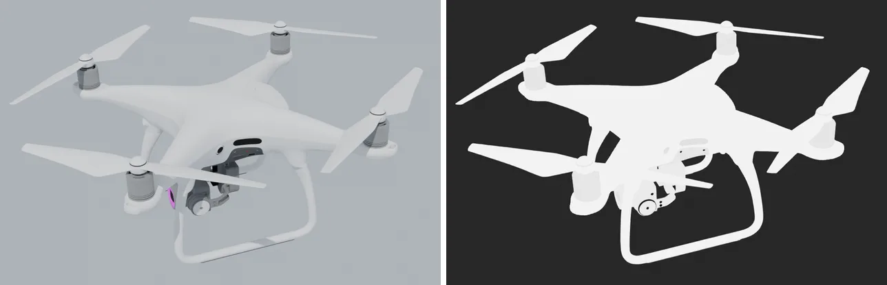

This tutorial takes a 3D model into Blender, says what every part is made of, and hands it to irsim with the irsim Thermal Materials add-on. You need no Python.

Why it matters. A thermal camera does not see colour. It sees how hot each surface is and how much that surface emits. A matte black plastic emits well and shows its own temperature. Polished aluminium hardly emits at all, so it mostly shows a reflection of whatever is around it, such as a cold sky. Get the material wrong and a hot motor can read as cold sky. So every part needs its real material, and a downloaded model almost never says what that is.
What you need#
- Blender 5.2 (the version the irsim asset tools use).
- This repository checked out: the folder with
configs/,src/andblender_addon/in it. - The project's Python, which is Isaac Sim's
python.sh(~/IsaacSim/_build/linux-x86_64/release/python.sh). Any Python 3.10 or newer that has irsim installed also works. The add-on uses it to read the material library and to check new materials with irsim's own rules.
Steps#
- Install the add-on, once.
- Open the model and make its parts real parts: separate, join and rename, as in any Blender work.
- Assign materials, part by part or face by face, and see the result in the thermal view.
- Start from an existing asset, when the model already has a material map.
- Add a material the library lacks, checked by irsim before it is written.
- Find the connections between parts: which parts touch, and which face each other across a gap.
- Add the parts you cannot see: the engine inside a car shell, the battery inside a drone.
- Check the model and its size.
- Export it to irsim and run the project's own audit.
- See it all on a real model: the DJI Phantom 4, done headless by one script.
- Troubleshooting.
The add-on's own plan, including what is not built yet, is blender_addon/PLAN.md.